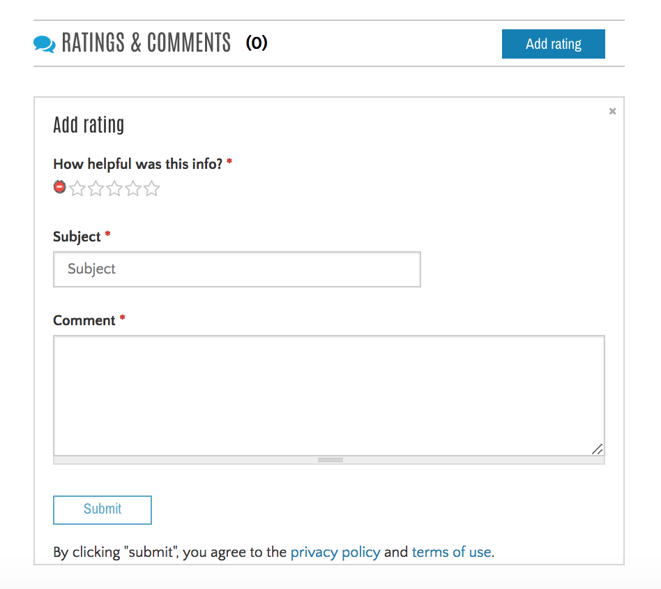
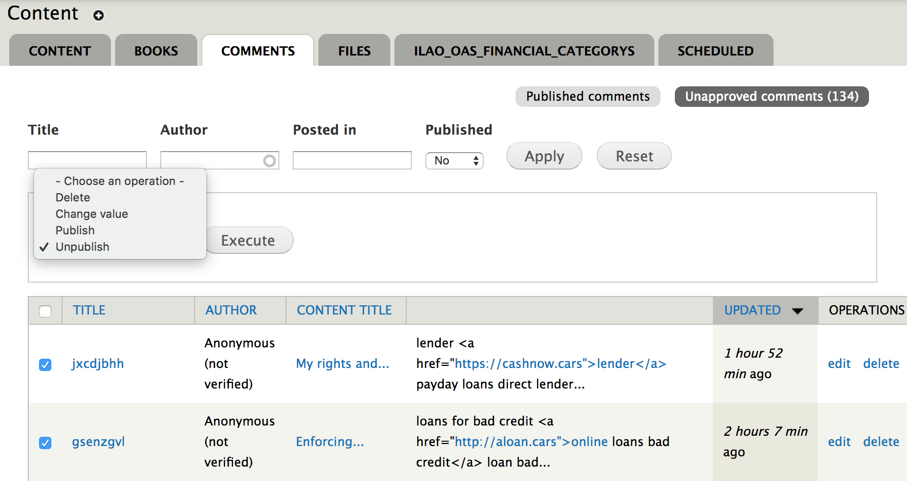

Comments & Ratings System¶
Where comments are enabled¶
Comments are enabled on the following content types:
- Legal content pages
- Portal content pages
- Attorney desk reference manual pages
- Site FAQs
- Blog posts
- Support tickets
Who can comment on content pages¶
- Legal content: anyone (logged in and anonymous users)
- Portal content: anyone
- ADRM content: anyone
- Site FAQs: anyone
- Blog posts: anyone
- Support tickets: staff and interns
Note
Anonymous comments must be approved by staff or intern users before they are published. Anonymous ratings will not be counted unless the comment is published by ILAO.
Integration with ratings system¶
For legal content, portal pages, site FAQs, and ADRM content, ratings are integrated with comments. A user is required to add a comment to explain their rating, unless that user is a staff or intern user.
We use star ratings for our content. Users can select 1 to 5 stars. Votes are averaged together and displayed on the content pages.
- If the user is logged in, only their last vote on a particular page counts.
- If the user is anonymous, all votes count since we can not easily distinguish between anonymous users.
Warning
Ratings are language neutral so the total displayed is based on all languages. If there are 5 Spanish ratings and 6 English ratings, you’ll see a total of 11 ratings on both the English and Spanish views of the content.
User interaction with comments¶
- Any logged in user can flag comments:
- Like a comment
- Flag a comment as inappropriate. Comments are automatically unpublished after 3 flags
- Reply to a comment
- Staff and intern users can also:
- edit a comment
- delete a comment
- create a new support ticket based on the comment.
Warning
the “email user” feature does not work.
Note
Anonymous users can not interact with comments other than to add them. Logged in users who are not staff/intern users can not edit or delete any comments, even their own.
Logged in users can see their comments on their dashboard.
Comment and ratings reporting tools¶
Ratings report¶
The ratings report includes the content title and total ratings for each node. It can be exported as a CSV file.
Go to: Ratings report
Comments with Ratings report¶
The comments with ratings report lists each individual rating with its associated comment. It can be exported as a CSV file.
Go to: Comments with Ratings report
Published and unpublished comments report¶
All comments, regardless of type are visible on the Comments tab under the Find Content page. By default, it shows only published comments. Comments can be filtered by:
- Title (subject)
- Author (username)
- Node title
- Content type
- Published status
Clicking on “Unapproved comments” shows all comments that are not published. These can be managed individually or in bulk. To publish, delete, or unpublish in bulk:

- Check the boxes next to the comments you want to modify.
- Select an operation from the Operations drop down
- Press execute.